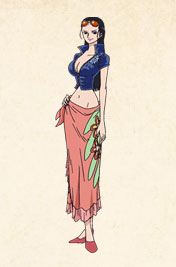
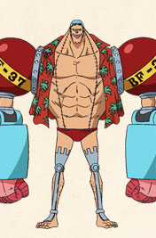

麦わらの一味


冷静で時に厳しい発言もあるが、根は優しい。日頃から鍛錬は欠かさず、常に強さを求めている。但し、極度の方向音痴なので一人で出歩こうとすると仲間に止められる。


|
麦わらの一味 |
|||
|---|---|---|---|
|
モンキー・D・ルフィ | |
ロロノア・ゾロ |
| 海賊王になるのが夢で、赤髪のシャンクスに憧れて海賊になった。ゴムゴムの実の能力者。シャンクスから預かっている麦わら帽子がトレードマーク。 大食いで宴が大好き。真っ直ぐで自由すぎる振る舞いに振り回されることも多いが、仲間からの信頼は絶大であり、また仲間への信頼も揺るぎない。世の常識にとらわれることなく、自分の信念に基づいて行動する。 | "海賊狩りのゾロ"の異名を持つ、三刀流の剣士。今は亡き親友のくいなとの約束で、世界一の剣豪になることが夢。世界最強の剣士である"鷹の目のミホーク"を目標としている。 冷静で時に厳しい発言もあるが、根は優しい。日頃から鍛錬は欠かさず、常に強さを求めている。但し、極度の方向音痴なので一人で出歩こうとすると仲間に止められる。 | ||
|
ナミ | |
ウソップ |
| "泥棒猫"ナミの異名を持つ、麦わらの一味の航海士。世界中の海図を書くのが夢。海賊の支配を受けていた経験から、海賊を忌み嫌っていたが、次第にルフィ達を信頼するようになった。天候の変化を感覚的に感じ取る能力があり、航海術に長け、船の操舵を指揮することも。金や財宝が大好きで、自分の美貌や泣き真似などの演技を駆使して他人を欺くこともある。 | "海賊狩りのゾロ"の異名を持つ、三刀流の剣士。今は亡き親友のくいなとの約束で、世界一の剣豪になることが夢。世界最強の剣士である"鷹の目のミホーク"を目標としている。
冷静で時に厳しい発言もあるが、根は優しい。日頃から鍛錬は欠かさず、常に強さを求めている。但し、極度の方向音痴なので一人で出歩こうとすると仲間に止められる。 |
||
|
サンジ | |
トニートニー・チョッパー |
| 海上レストラン「バラティエ」の元副料理長で、口は悪いが料理の腕は一流。世界中の海の食材が集まる伝説の海"オールブルー"を見つけるのが夢。命の恩人ゼフへの恩義から足踏みしていたが、ルフィ達との出会いで夢を追う決意をする。 裏で単独行動したり、機転を利かせたりするなど頭がいい。 但し、無類の女好きで、美人の色仕掛けに滅法弱い。 | ヒトヒトの実の能力者で、麦わらの一味の船医。人としての能力を身につけた元トナカイ。動物系悪魔の実の特性で姿を変化させることが出来る。人の仲間にもトナカイの仲間にも入れずにいた頃、Dr.ヒルルクに救われ、名と帽子を貰った。何でも治せる医者に、"万能薬"になると決意し、Dr.くれはから医術を教わる。鼻が利いたり、動物と会話することができる。 | ||
|  | ニコ・ロビン |  | フランキー |
| ハナハナの実の能力者で考古学者。真の歴史を語る石"真の歴史の本文(リオ・ポーネグリフ)"を見ることが夢。故郷・オハラをバスターコールで消失するも、生き延びた。歴史の本文を解読できることを危険視され、８歳で賞金を懸けられ、政府に追われる身となる。何をも信用してこなかったが、次第に麦わらの一味に信頼を寄せ、またその力になりたいと願うようになった。 | "鉄人(サイボーグ)"フランキーの異名通り、体中に武器を仕込んでいる。伝説の船大工・トムの弟子でサウザンド・サニー号を造った船大工。宝樹"アダム"で造った"夢の船"に乗り"海の果て"へ到達するのを見届けるのが夢。変態であることを誇りに思っている。ウォーターセブンでは船の解体屋と賞金稼ぎを営むフランキー一家の棟梁を務めていた。燃料はコーラ。 | ||
| ブルック | |||
| ヨミヨミの実によって、一度死んだがヨミがえったアフロなガイコツ紳士。ガイコツのくせにお化けが大嫌いで、美人に目がない音楽家兼剣士。スカルジョークをよく飛ばす。 麦わら一味の力を借りてモリアに奪われた影を取り戻す。 かつて交わしたクジラのラブーンとの約束を、引き返さずに正面から再会して果たすことを誓い、一味の仲間となった。 | |||